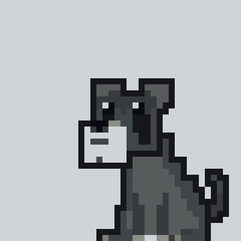

| Tense | Example | Structure |
|---|---|---|
| Present simple | Alioli is made from oil, garlic and salt. | is/are + past participle |
| Present continuous | The hall is being painted this week. | is/are being + past participle |
| Past simple | John F. Kennedy was assassinated in 1963. | was/were + past participle |
| Past continuous | The signs were being put up last week. | was/were being + past participle |
| Present perfect | Oranges have been grown here for centuries. | has/have been + past participle |
| Past perfect | When he got home, he found that his flat had been burgled. | had been + past participle |
| Future simple | The work will be finished next week. | will be + past participle |